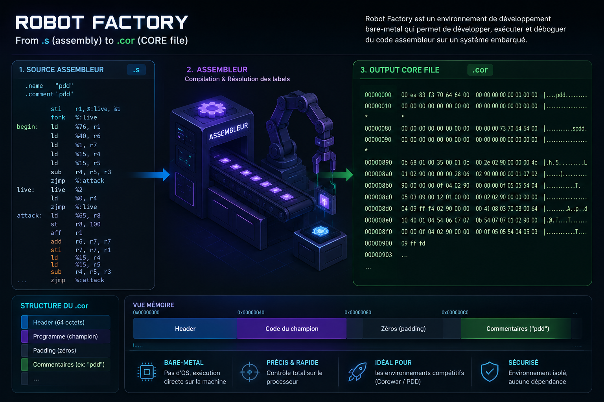
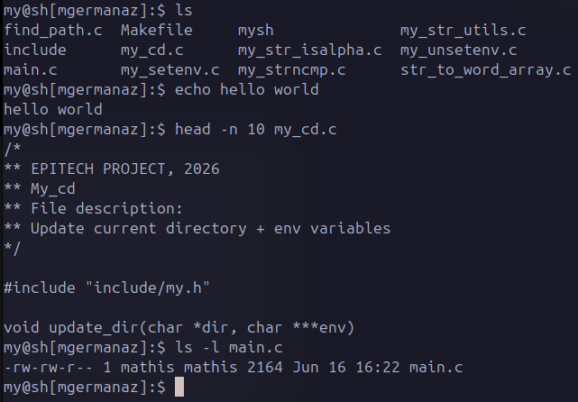
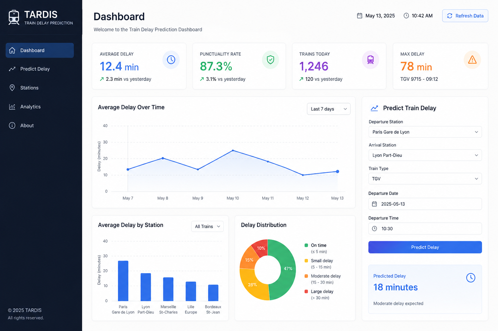
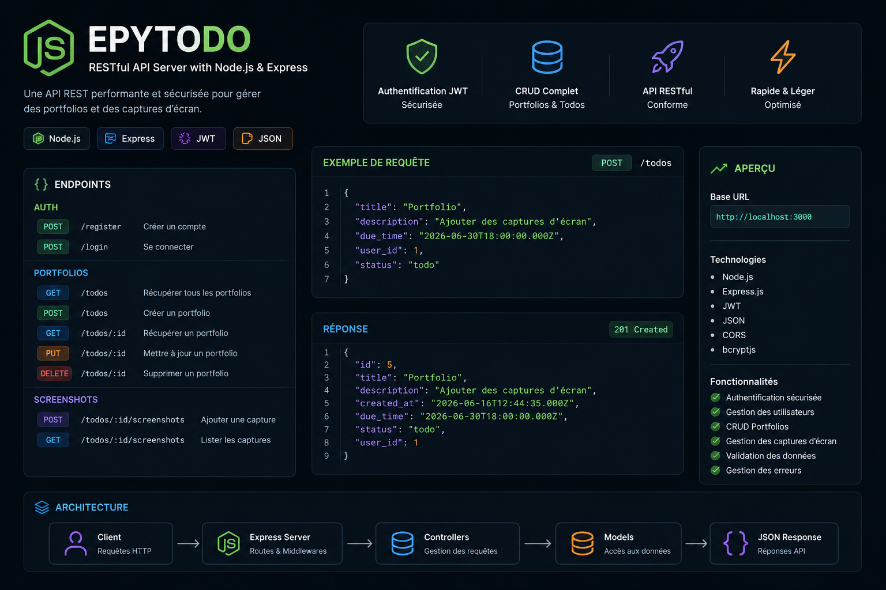
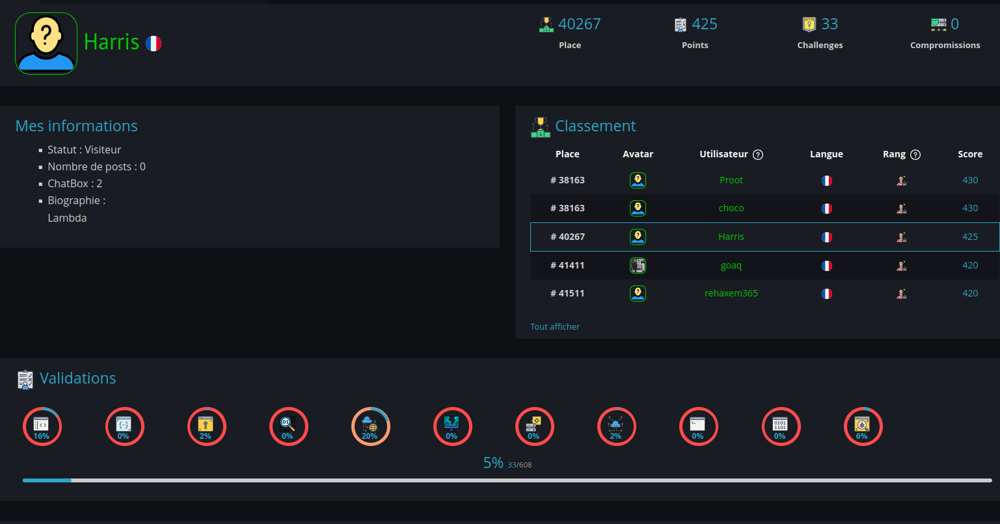
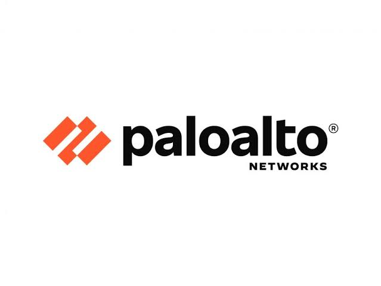

Développement logiciel • Cybersécurité
Étudiant à Epitech La Réunion. Je développe des applications, j'explore les systèmes informatiques et je m'intéresse particulièrement à la cybersécurité offensive et défensive.
Challenges Root-Me
Stages réalisés
Développement logiciel
Recherche de stage

Développement d'un assembleur Corewar capable de convertir un langage assembleur en bytecode.

Reproduction d'un shell UNIX avec processus, pipes, redirections et environnement.

Projet Data Science et Machine Learning autour des retards SNCF.

API REST complète avec authentification JWT, MySQL et TypeScript.

Plus de 30 challenges réalisés en sécurité web, réseau et forensics.

Étude des mécanismes de détection et d'analyse des EDR modernes.
Lors de ce stage au service informatique du lycée, j'ai participé à la maintenance du parc informatique, à la résolution de problèmes matériels et logiciels ainsi qu'à la gestion des serveurs et du réseau. Cette expérience m'a permis de renforcer mes compétences techniques et ma capacité à intervenir sur des infrastructures informatiques.
Compétences : Administration système • Maintenance informatique • Support utilisateur • Réseaux • Diagnostic de pannes • Configuration de postes • Installation de logiciels
Au sein de Pragma-Tic, j'ai conçu la maquette puis développé le site web de l'entreprise en optimisant son référencement. J'ai également développé un programme permettant de tester le comportement d'un antivirus Palo Alto dans un environnement contrôlé, renforçant ainsi mes compétences en développement et en cybersécurité.
Compétences : Développement web • HTML/CSS/JavaScript • SEO • UI/UX • Cybersécurité • Programmation • Gestion de projet
Disponible pour un stage de juillet à décembre 2026.
Développement d'un assembleur Corewar capable de convertir un langage assembleur en bytecode exécutable.
Robot Factory est un projet système réalisé en langage C. L'objectif était de développer un assembleur respectant les spécifications du jeu Corewar.
Le programme analyse le code source, gère les labels, les instructions, les paramètres et génère ensuite un fichier binaire compatible avec la machine virtuelle Corewar.
Ce projet m'a permis de renforcer mes compétences en parsing, gestion mémoire, manipulation binaire et architecture logicielle.
Reproduction d'un shell UNIX fonctionnel en langage C.
Minishell reproduit le comportement d'un shell UNIX classique.
Le projet inclut la gestion des commandes internes, des variables d'environnement, des processus enfants, des pipes et des redirections.
Ce projet m'a permis d'approfondir Linux, les appels système et la programmation système.
Projet Data Science & Machine Learning autour de la prédiction des retards SNCF.
TARDIS est un projet de Data Science centré sur l'analyse des retards des trains SNCF.
Le projet comprend :
• Nettoyage des données
• Analyse exploratoire (EDA)
• Feature Engineering
• Modèles de régression
• Optimisation des performances
• Dashboard Streamlit
L'objectif était de prédire les retards futurs à partir des données historiques.
Développement d'une API REST complète avec authentification sécurisée et gestion de tâches.
EpyTodo est une API REST développée en TypeScript permettant la gestion d'utilisateurs et de tâches.
Le projet intègre l'authentification JWT, la gestion des permissions, des routes protégées ainsi qu'une base de données MySQL.
Il m'a permis d'améliorer mes compétences en architecture backend, sécurité API et conception logicielle.
Entraînement continu à la cybersécurité à travers des challenges techniques.
Root-Me est une plateforme d'entraînement à la cybersécurité reconnue dans le domaine.
J'y ai réalisé plus de 30 challenges portant sur différents domaines :
• Sécurité Web
• Réseau
• Cryptographie
• Forensics
• Programmation
Ces exercices me permettent de développer une méthodologie d'analyse et de résolution de problèmes appliquée à la sécurité.
Étude du fonctionnement des solutions de protection modernes dans un contexte de cybersécurité défensive.
Ce projet avait pour objectif de mieux comprendre les mécanismes de détection utilisés par les antivirus et les EDR modernes.
L'accent a été mis sur l'observation des comportements surveillés par les solutions de sécurité ainsi que sur les méthodes de détection utilisées.
Cette expérience a été particulièrement enrichissante lors de mon stage chez Pragma-TIC où j'ai participé à la mise en place d'un environnement de test autour d'une solution Palo Alto.
Ce travail m'a permis de développer une meilleure compréhension des mécanismes de défense des postes de travail et des outils utilisés par les équipes cybersécurité.